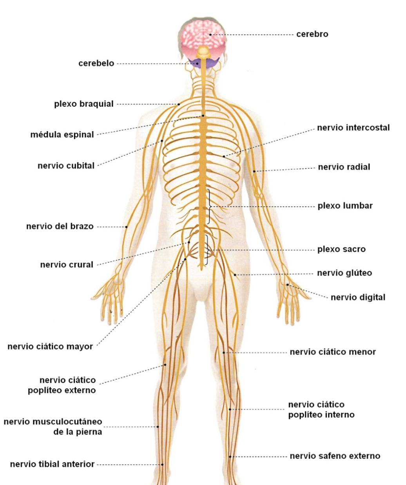

Explorando el Sistema Nervioso y la Salud Mental
Un espacio dedicado a entender cómo funciona nuestro cerebro y cómo cuidar nuestra salud emocional.
¿Sabías que...?
El cerebro humano contiene aproximadamente 86 mil millones de neuronas, capaces de crear conexiones que permiten nuestros pensamientos, recuerdos y emociones.
Datos curiosos
Aunque representa cerca del 2% del peso corporal, el cerebro consume alrededor del 20% de la energía del cuerpo.
Incógnitas actuales
Los científicos todavía investigan cómo exactamente surge la conciencia y cómo el cerebro transforma señales eléctricas en experiencias.
